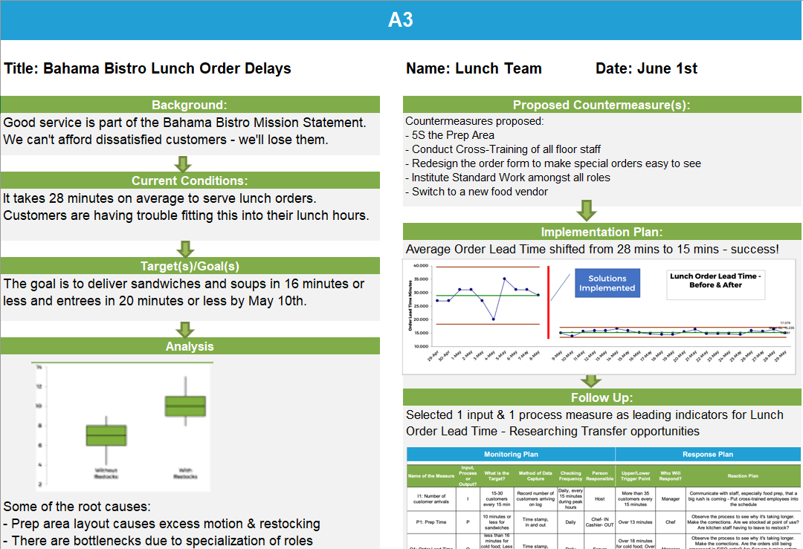
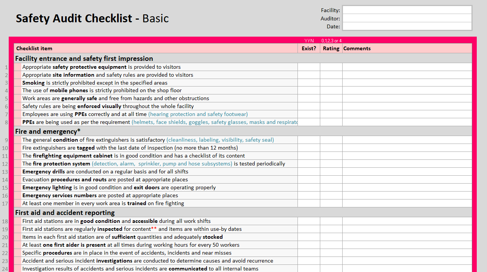

Documents

A3
On a literal level, A3 refers to a ledger size (11×17) piece of paper. But in the Lean Six Sigma world, it is a tool to help see the thinking behind the problem-solving. Don’t mistake A3s as a document to be completed after the problem is solved. It’s important to use the A3 while working through the problem.
- goleansixsigma.com

Audit
Commitment to occupational health and safety is considered an important step toward achieving safe and productive working conditions. A safety audit checklist is a tool that will help to evaluate the safety conditions and practices in any workplace in accordance to common safety standards and regulations. It lists the safety criteria to be met in order to better address compliance gaps, and provides opportunities to improve the workplace environment.
- citoolkit.com

Project Task List with Gantt Chart
A simple project tracker with a Gantt chart made by Jon
Wittwer
for Vertex42. The source of this
document is here.
Under a limited use license
(must be downloaded from source).
More task list templates
can be found here.